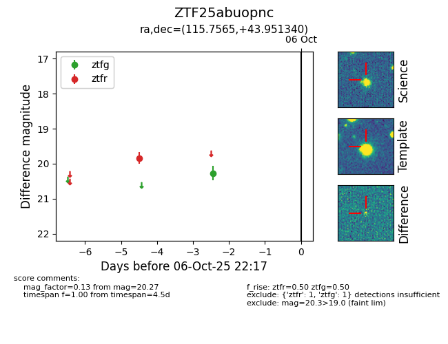

FINK: ZTF25abuopnc
Lasair: ZTF25abuopnc
ALeRCE: ZTF25abuopnc
ZTF25abuopnc (ztf,fink)
equatorial (ra, dec) = (115.7565,+43.95134)
galactic (l, b) = (175.1281,+27.35386)

last ztfg=20.27, ztfr=19.83
1 ztfg, 1 ztfr detections